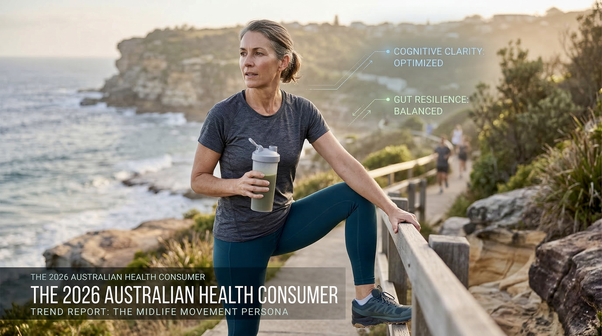
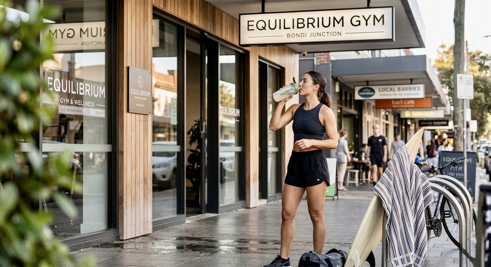

The current Australian market is characterised by a recalibration of wellness priorities. After years of bio-hacking extremes, the 2026 consumer values healthspan over mere lifespan, focusing on daily functional mobility, cognitive clarity, and gut resilience. This shift is particularly evident in Sydney and Melbourne, where the “Midlife Movement” has redefined wellness as a proactive, evidence-led endeavour.
Data indicates that 86% of Australians now prioritise physical and mental well-being in their purchasing decisions, with a specific focus on clean protein enrichment and functional beverages.

Market Segmentation & Primary Drivers
| Market Segment | Primary Driver | Preferred Product Attributes |
|---|---|---|
| High-Performance Professionals (Sydney CBD) | Cognitive optimisation and stress resilience | Bio-active energy, L-theanine rich tea, low-caffeine lift |
| Artisanal Wellness Enthusiasts (Melbourne) | Local sourcing and ethical transparency | Shipped from Melbourne, shade-dried, third-party lab tested |
| Active Families (NSW/QLD Suburbs) | Gut health and family-safe hygiene | Non-bloating protein, chemical-free soaps, fast local delivery |
| Silver Economy (Victoria/QLD) | Joint health and anti-inflammatory support | 36+ anti-inflammatory compounds, sustainable routines |
The “Near Me” Economy: Hyper-Local Intent
Analysis of “near me” keyword trends in 2026 reveals high-intent searches. Growth in “gyms near me” and “chiropractor near me” signifies a demographic requiring nutritional support for recovery. Refined opportunities include: Best pre-workout for gyms near me Sydney CBD, Natural joint support for chiropractic patients Melbourne, and Fresh Moringa powder health food store near me QLD. NutriThrive ships from Truganina (3029) so Melbourne and VIC get 1–2 business days; Sydney and QLD metro 2–3 days.
Buy Moringa Powder – $10.50/100g | Buy Moringa Soap – $6.50 | Buy Black Tea – $7.00 | Buy Curry Leaves – $6.45 | Buy Combo Pack – $15.55
Regional Deep Dive: Sydney and NSW
Sydney residents show high engagement with neurowellness and metabolic health. In Bondi Junction, Newtown and the CBD there is strong focus on “clean gains”—achieving results without compromising gut integrity. The Sydney professional often faces a caffeine overload; NutriThrive’s Darjeeling Black Tea offers L-theanine for calm, sustained lift without jitters.
Non-bloating protein for Bondi surfers – Moringa $10.50 | Sustained lift energy tea – Black Tea $7.00
Regional Deep Dive: Melbourne and Victoria
Melbourne’s wellness market is sophisticated and loyal to local brands. NutriThrive’s warehouse in Truganina (3029) enables neighbourhood-speed delivery. While generic brands can sit in containers for months, NutriThrive ships fresh, shade-dried batches within 48 hours. In Richmond and South Yarra, this freshness narrative drives conversion.
Bio-active Moringa protein Melbourne – $10.50/100g | Wellness combo pack – $15.55
Regional Deep Dive: Queensland and Brisbane
Queensland’s climate demands solutions for humidity and UV. Brisbane is increasingly focused on preventative care and hydration-based wellness. Key themes: organic purity, UV/skin repair, sustainable living, and gut-friendly energy.
Organic plant protein Brisbane – Moringa $10.50 | Moringa soap for skin – $6.50
The Protein Value Comparison
How NutriThrive Moringa stacks up on price and protein (real prices, 2026):
| Brand | Price (1kg equiv.) | Protein/Serve | Value |
|---|---|---|---|
| Musashi High Protein | $45.00 | 30g | Budget |
| True Protein WPI | $85.00 | 25g | Premium |
| Nuzest Clean Lean | $120.00 | 21g | Expensive |
| NutriThrive Moringa | From $79/kg (400g $31.60; 100g $10.50) | 27g/100g | Best overall |
Buy Moringa Powder – from $10.50 | 400g bundle $31.60

The Science of NutriThrive: Moringa & Soap
Moringa is a complete protein with all 9 essential amino acids. NutriThrive’s shade-drying preserves Chlorogenic Acid (glucose metabolism) and Quercetin (antioxidant support). Our soap uses organic Moringa, collagen and essential oils—pH balanced, biodegradable and free from SLS and artificial fragrances.
Moringa Powder – $10.50 | Moringa Soap – $6.50
Logistics & Guarantees
Warehouse: Truganina, VIC 3029. Melbourne/VIC Metro: 1–2 business days. Sydney/NSW and QLD Metro: 2–3 business days. Free shipping: AU$80+ (Australia); AU$90+ (Worldwide). Price match and 7-day money-back guarantee.
FAQs: 2026 Australian Wellness
Where can I find NutriThrive Moringa powder near me in Sydney?
NutriThrive is online-exclusive, shipping from our Melbourne warehouse for maximum freshness and best price ($10.50 per 100g) with 2–3 day delivery to Sydney.
How does NutriThrive Moringa compare to brands at Chemist Warehouse?
Our Moringa is shade-dried and batch-dated. Lab tests show our powder retains up to 50% more Vitamin C and antioxidants than brownish-green retail alternatives.
Why is Darjeeling tea better than coffee for work focus?
It contains L-theanine, which smooths caffeine delivery for “calm energy” without the 3 PM crash associated with high-dose coffee.
Sources & Further Reading
Wellness and market data aligned with industry reports and NutriThrive’s own customer research (2025–2026). For evidence on moringa and L-theanine: PubMed (moringa oleifera, chlorogenic acid, quercetin); tea and cognition (L-theanine + caffeine). Our About and product pages detail lab testing and sourcing.
Explore more: Clean Protein & Moringa Hub · Batch Codes & Freshness · Melbourne Fitness & Nutrition · Gut Health Superfoods
Shop now: Moringa Powder $10.50 · Moringa Soap $6.50 · Black Tea $7.00 · Curry Leaves $6.45 · Combo $15.55